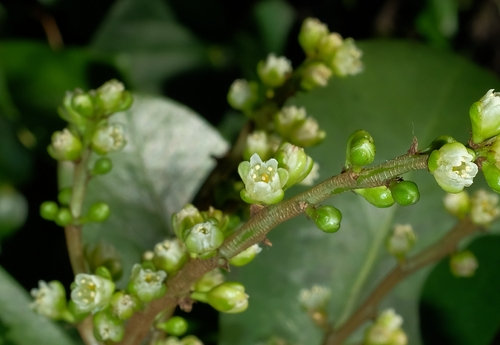

Corynocarpaceae
Corynocarpaceae Family
Corynocarpaceae is a small family of flowering plants found in the Southern Hemisphere, particularly in New Zealand and the Pacific Islands. Known for their simple leaves and fleshy fruits, they are ecologically significant in their native habitats.
Overview
Corynocarpaceae is a monotypic family (containing only the genus Corynocarpus with about 5 species) belonging to the order Cucurbitales, within the Fabid clade of Rosids. This small family of evergreen trees and shrubs has a restricted distribution in the Southwest Pacific area, including New Guinea, northeastern Australia (Queensland), New Caledonia, Vanuatu, and New Zealand. It is not found in the Americas, Africa, or mainland Asia.
Plants in this family are recognized by their alternate, simple leaves which are typically large, leathery, and have entire margins. A key vegetative feature is the presence of relatively large stipules that are often fused (intrapetiolar) or rolled (convolute) and protect the terminal bud; these stipules fall off early, leaving distinctive annular scars that encircle the twig at each node. The flowers are small, radially symmetrical, 5-merous, and borne in terminal or axillary panicles. Florally, they are distinguished by having 5 fertile stamens that alternate with 5 prominent, often petal-like staminodes (sterile stamens), all situated around a nectar disk at the base of the superior ovary. The ovary typically functions as if single-loculed and develops into a large, fleshy drupe containing a single seed.
The seeds of Corynocarpus are well-known for containing the potent neurotoxin karakin (a nitro compound), making them highly poisonous if ingested raw. However, the kernels of Corynocarpus laevigatus (Karaka) were a traditional food source for Māori in New Zealand after extensive and careful preparation involving cooking and soaking to remove the toxin. The family has little other economic importance but is botanically interesting due to its unique features and phylogenetic placement.
Quick Facts
- Scientific Name: Corynocarpaceae Engl.
- Common Name: Corynocarpus family (or Karaka family)
- Number of Genera: 1 (Corynocarpus)
- Number of Species: Approximately 5
- Distribution: SW Pacific region (NE Australia, New Guinea, NZ, Vanuatu, New Caledonia)
- Evolutionary Group: Eudicots - Rosids (Fabids / Eurosids I) - Order Cucurbitales
Key Characteristics
Growth Form and Habit
Evergreen trees or shrubs with smooth bark.
Leaves
Leaves are arranged alternately and spirally. They are simple, petiolate, relatively large, often leathery (coriaceous), and typically have entire margins. Venation is pinnate. A distinctive feature is the presence of conspicuous stipules which are intrapetiolar (fused between petiole and stem) or convolute (rolled), forming a cap over the terminal bud. These stipules are deciduous (fall off early), leaving prominent annular (ring-like) scars encircling the stem at the nodes.
Inflorescence
Inflorescences are usually terminal or axillary, relatively large, branched panicles, sometimes appearing raceme-like. Bracts are small and caducous.
Flowers
Flowers are small (usually 4-8 mm diameter), actinomorphic (radially symmetrical), bisexual (perfect), and typically 5-merous. They are often greenish-white, cream, or yellowish.
- Calyx: Consists of 5 sepals, fused shortly at the base, with imbricate (overlapping) lobes. Persistent in fruit.
- Corolla: Consists of 5 petals, free (distinct), alternating with the sepals, often slightly larger than sepals, inserted at the base of the nectar disk. Imbricate in bud.
- Androecium: Characteristically consists of two whorls: an outer whorl of 5 fertile stamens alternating with the petals, and an inner whorl of 5 prominent staminodes alternating with the fertile stamens (i.e., opposite the petals). The staminodes are often petal-like or toothed. Both stamens and staminodes are inserted at the base of or on a fleshy, lobed nectar disk that surrounds the ovary base. Fertile stamens have short filaments and basifixed anthers opening via longitudinal slits.
- Gynoecium: The ovary is superior, composed of theoretically 2 (sometimes reported as 1 or 3) fused carpels, but typically functions as if 1-locular due to the suppression/abortion of the second carpel/locule. The functional locule contains a single pendulous, anatropous ovule attached near the apex. Styles are 1 or 2, free or fused at the base; stigmas are small, capitate.
Fruits and Seeds
The fruit is a relatively large (typically 2-4 cm long), ovoid or ellipsoid, fleshy drupe. The exocarp is smooth, often brightly colored (orange, red, purple, or yellowish). The mesocarp is fleshy, and the endocarp (stone) is hard, enclosing a single large seed. The seed completely lacks endosperm; the embryo is large with thick, fleshy, plano-convex cotyledons. The seed kernel contains the toxin karakin and is highly poisonous unless properly detoxified.
Chemical Characteristics
The most notable chemical feature is the presence of the toxic nitro Toxin karakin (a glucoside of 3-nitropropionic acid) in the seeds and to a lesser extent in fruits/leaves. Tannins are also present. Unlike many other Cucurbitales families (like Cucurbitaceae), they lack cucurbitacins. Silica bodies are generally absent.
Field Identification
Identifying Corynocarpaceae (Corynocarpus) relies on recognizing the combination of alternate entire leaves with distinctive stipule scars, the unique flower structure (5 stamens + 5 staminodes), the large drupe fruit, and its restricted SW Pacific distribution.
Primary Identification Features
- Habit: Evergreen tree or shrub.
- Alternate, Simple, Entire Leaves: Often large and leathery.
- Large Deciduous Stipules leaving Annular Scars: Look for ring-like scars encircling the twig at each node where the bud-enclosing stipules have fallen.
- Flowers with 5 Stamens + 5 Staminodes: Small, 5-merous flowers with this specific androecial structure around a disk.
- Superior Ovary (Functionally 1-locular): Ovary positioned above other floral parts.
- Large Fleshy Drupe Fruit: Often orange or reddish, containing a single large poisonous seed.
- Restricted SW Pacific Distribution: Native range limited to NE Australia, New Guinea, NZ, and nearby islands.
Secondary Identification Features
- Flowers small, actinomorphic, in panicles.
- 5 distinct petals present.
- Seed kernel known to be poisonous (karakin).
Seasonal Identification Tips
- Year-Round: Evergreen leaves, tree/shrub habit, and especially the characteristic annular stipule scars on twigs are visible year-round.
- Flowering Season: Panicles of small flowers appear seasonally. Check for the 5 stamens + 5 staminodes structure.
- Fruiting Season: Large, colorful drupes mature seasonally and are highly diagnostic.
Common Confusion Points
- Other Tropical Trees with Alternate Simple Leaves: Many families fit this description (e.g., Lauraceae, Annonaceae, Sapotaceae, some Euphorbiaceae). Key distinguishing features for Corynocarpaceae are the prominent annular stipule scars, the specific flower structure (5 stamens + 5 staminodes), superior ovary, and the large drupe fruit.
- Pittosporaceae: Some Pittosporum species are trees/shrubs with alternate simple entire leaves, but they lack the distinctive stipule scars, have different flowers (often 5 stamens only, superior ovary often multi-locular), and fruit is usually a capsule with sticky seeds. (Order Apiales).
- Myrsinaceae/Primulaceae (e.g., Ardisia): Shrubs/trees with alternate simple leaves, but typically lack stipules or have different types, flowers often sympetalous (fused petals) or different structure, fruit usually a drupe or berry but floral details differ. (Order Ericales).
- The annular stipule scars are perhaps the most useful vegetative character for recognizing Corynocarpus.
Field Guide Quick Reference
Look For:
- Evergreen Tree or Shrub
- Alternate simple, entire leaves
- Large stipules leaving annular scar at node
- Flowers small, 5-merous
- 5 Stamens + 5 Staminodes
- Ovary Superior
- Fruit a large fleshy Drupe
- Seed poisonous (Karakin)
- SW Pacific distribution
Key Variations (Within Genus):
- Leaf size and shape
- Drupe size and color
- Minor floral details
Notable Examples
The family Corynocarpaceae consists of a single genus, Corynocarpus, with species found across the Southwest Pacific region.

Corynocarpus laevigatus
Karaka
The best-known species, a large evergreen shrub or tree endemic to New Zealand. It has large, glossy dark green leaves, panicles of small greenish flowers, and produces abundant large, bright orange drupes. The seed kernel is highly poisonous containing karakin but was traditionally processed and eaten by Māori.

Annular Stipule Scars
Twig Feature
A very useful identifying feature for Corynocarpus is the distinct ring-like (annular) scar left on the twig at each node after the large, bud-enclosing stipules fall off. This scar completely encircles the stem just above the leaf petiole base.

Corynocarpus Fruit
Karaka Drupe
The fruit is a large, fleshy drupe, typically 2-4 cm long, containing a single hard stone (endocarp) which encloses the large, poisonous seed kernel. The bright orange color of Karaka fruits makes them conspicuous.

Other Corynocarpus Species
Australian/New Guinean Species
Other species like C. cribbianus (NE Australia, New Guinea) and C. similis (New Guinea) share the same generic characteristics: trees/shrubs with alternate entire leaves, distinctive stipule scars, small flowers (5 stamens + 5 staminodes), and large drupes with poisonous seeds. They differ in details of leaf size, flower structure, and fruit morphology.
Phylogeny and Classification
Corynocarpaceae, containing only the genus Corynocarpus, belongs to the order Cucurbitales within the Fabid clade of Rosids. This placement is robustly supported by molecular phylogenetic studies, although its exact position within the order remains somewhat uncertain and has varied slightly between different analyses.
Cucurbitales is an order known for including families with predominantly inferior ovaries (like Cucurbitaceae, Begoniaceae) and often parietal placentation. Corynocarpaceae, with its superior ovary and single apical ovule, appears somewhat anomalous morphologically within the order. Molecular data sometimes place it sister to Coriariaceae (another family with unusual features like apocarpy and a disjunct distribution, also in Cucurbitales), or potentially near Anisophylleaceae. It represents a distinct, isolated lineage within the broader Cucurbitales radiation.
Position in Plant Phylogeny
- Kingdom: Plantae
- Clade: Angiosperms (Flowering plants)
- Clade: Eudicots
- Clade: Rosids (Fabids / Eurosids I)
- Order: Cucurbitales
- Family: Corynocarpaceae
Evolutionary Significance
Corynocarpaceae, though small, is evolutionarily interesting:
- Phylogenetic Placement: Its firm position within Cucurbitales, despite morphological differences (e.g., superior ovary), highlights the importance of molecular data in understanding deep evolutionary relationships.
- Biogeography: Its restricted distribution in the SW Pacific/Australasia provides data for understanding the historical assembly and diversification of floras in this region, potentially linked to Gondwanan history or Cenozoic dispersal.
- Unique Floral Morphology: The presence of a distinct whorl of 5 petaloid staminodes alternating with the 5 fertile stamens is an unusual floral feature.
- Chemical Defense: The evolution of the potent nitro Toxin karakin represents a specialized chemical defense mechanism.
- Isolated Lineage: Represents a relatively isolated and morphologically distinct lineage within the Cucurbitales order.